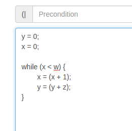
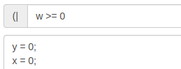
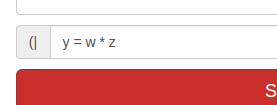
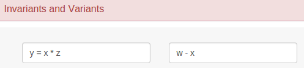
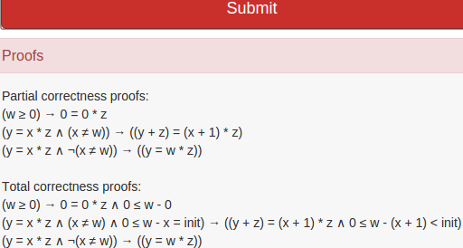

<!-- Instructions modal with instruction text -->
<div class="modal fade" id="info-modal" tabindex="-1" role="dialog" aria-labelledby="myModalLabel" aria-hidden="true">
	<div class="modal-dialog">
		<div class="modal-content">
			<div class="modal-header">
				<button type="button" class="close" data-dismiss="modal" aria-hidden="true">&times;</button>
				<h4 class="modal-title" id="myModalLabel">Instructions</h4>
			</div>
			<div class="modal-body">
			
				<div id="instructionGroup">
					<div class="panel panel-danger panel-instruction">
						<div class="panel-heading pointer collapsed" role="tab" id="headingAbout"
							data-toggle="collapse" data-parent="#instructionGroup"
							aria-expanded="true" aria-controls="collapseAbout" href="#collapseAbout">
							<div class="panel-title">
								<span class="glyphicon collapse-instruction"></span>
								About
							</div>
						</div>
						<div id="collapseAbout" class="panel-collapse collapse" role="tabpanel" aria-labelledby="headingAbout">
							<div class="panel-body">
								<h3>Purpose</h3>
								The purpose of this application is to act as a program checker for a generic C-style
								language. Upon receiving a given program, the program checker parses the program
								and computes the formulas that need to be proven true so that the program can
								be determined to be valid.
								
								<h3>Workflow</h3>
								For most programs to be checked by the program checker, it is simply necessary to
								provide a precondition, the program itself, and a postcondition (More on preconditions
								and postconditions in the following section). Clicking on the <strong>Submit</strong> button will
								send the information to the program checker which will then verify and check the code.
								Once this is done, the program checker will return its results. One of two things will
								happen in this case.
								
								<h4>The program is invalid</h4>
								There will be an error displayed in the <strong>Proofs</strong> section indicating that the program
								contains a syntax error. To help correct your code, please refer to the <strong>Program</strong> section
								of the instructions.
								
								<h4>The program is valid</h4>
								The formulas needed to prove the validity of the program, given in propositional logic,
								will be displayed in the <strong>Proofs</strong> section. Please note that some of these proofs may be
								impossible to prove depending on the structure of the program and on the given precondition
								and postcondition. It is up to the user to ensure that the pre- and postconditions are strong
								enough to help complete the proofs.
							</div>
						</div>
					</div>
					
					<div class="panel panel-danger panel-instruction">
						<div class="panel-heading pointer collapsed" role="tab" id="headingPrePost"
							data-toggle="collapse" data-parent="#instructionGroup"
							aria-expanded="true" aria-controls="collapsePrePost" href="#collapsePrePost">
							<div class="panel-title">
								<span class="glyphicon collapse-instruction"></span>
								Precondition and Postcondition
							</div>
						</div>
						<div id="collapsePrePost" class="panel-collapse collapse" role="tabpanel" aria-labelledby="headingPrePost">
							<div class="panel-body">
								The precondition and postcondition fields are used to specify what the program requires
								to function correctly and what properties it guarantees that its output will have.
								
								<h3>Precondition</h3>
								The precondition is required for telling the program checker what the written program
								needs to have guaranteed so that the program can then guarantee its own output. The
								precondition can be anything the user wants, however for the program checker to be able
								to properly manipulate it, it should be specified in propositional logic.
								
								<h3>Postcondition</h3>
								The postcondition is required for telling the program checker what the written program
								guarantees that its output will hold the properties specified in the postcondition. Again, the
								postcondition can be anything the user wants, however for the program checker to be able
								to properly manipulate it, it should be specified in propositional logic.
								
								<h3>Syntax</h3>
								As previously mentioned, the pre- and postconditions can take any user input, however the
								program checker can only manipulate them if they are specified in propositional logic. The
								reason that the user has the freedom to specify anything is that it is sometimes useful for
								the pre- and postconditions to specify complex or unique mathematic formulas. So, instead
								of restricting the options, it was decided to give the user some freedom at the expense of
								rigid validation. The user may therefore be able to specify any mathematical function or
								expression of its choice, like x&nbsp;=&nbsp;f(y) or g!&nbsp;>&nbsp;sqrt(f!).
								
								<h4>Symbols</h4>
								Some symbols are recognized by the program checker. These symbols are output by the checker
								in a way that makes them easier to read. The symbols that are recognized by the program checker
								are the following:
								<table class="table table-striped table-bordered">
									<caption>List of symbols recognized by the program checker</caption>
									<thead>
										<tr>
											<th>Group</th>
											<th>Symbol</th>
											<th>Program Checker Output</th>
										</tr>
									</thead>

									<tbody>
										<tr>
											<th rowspan="4">Propositional Logic</th>
											<td>-></td>
											<td>→</td>
										</tr>
										<tr>
											<td>/\</td>
											<td>∧</td>
										</tr>
										<tr>
											<td>\/</td>
											<td>∨</td>
										</tr>
										<tr>
											<td>~</td>
											<td>¬</td>
										</tr>
										<tr>
											<th rowspan="3">Mathematical</th>
											<td>>=</td>
											<td>≥</td>
										</tr>
										<tr>
											<td><=</td>
											<td>≤</td>
										</tr>
										<tr>
											<td>!=</td>
											<td>≠</td>
										</tr>
									</tbody>
								</table>
								In addition to these symbols, the symbols T and F represent tautology and contradiction,
								respectively.
								Any other symbols will be printed the same way as they were written in the pre- and
								postcondition input boxes. For example, if the formula x&nbsp;=&nbsp;(y&nbsp;+&nbsp;1)
								is written in the precondition box, then it will be output the same way by the checker.
							</div>
						</div>
					</div>
					
					<div class="panel panel-danger panel-instruction">
						<div class="panel-heading pointer collapsed" role="tab" id="headingProgram"
							data-toggle="collapse" data-parent="#instructionGroup"
							aria-expanded="true" aria-controls="collapseProgram" href="#collapseProgram">
							<div class="panel-title">
								<span class="glyphicon collapse-instruction"></span>
								Program
							</div>
						</div>
						<div id="collapseProgram" class="panel-collapse collapse" role="tabpanel" aria-labelledby="headingProgram">
							<div class="panel-body">
								The program to be checked by the program checker must be written in the program
								text area. This is the code that will be analyzed by the checker and from which
								the formulas whose validity needs to be proven are generated.
								
								<h3>Syntax</h3>
								<h4>BNF Notation</h4>
								For quick reference, the program syntax follows the BNF notation described in chapter 4
								of <em>Logic in Computer Science</em> by Michael Huth and Mark Ryan, second edition, on pages
								260 - 261. In short, the context-free grammar accepted by the checker is the following:
								
								<div class="well">
									E ::= n | x | (-E) | (E + E) | (E - E) | (E * E)<br>
									B ::= true | false | (!B) | (B & B) | (B || B) | (E &lt; E)<br>
										&nbsp;&nbsp;&nbsp;&nbsp;| (E &gt; E) | (E &lt;= E) | (E &gt;= E) | (E == E) | (E != E)<br>
									C ::= x = E | C; C | if B {C} else {C} | while B {C}
								</div>
								
								Where E is an expression, B is a boolean expression, and C is a command.
								
								<h4>Details</h4>
								The syntax of the program, to be accepted by the program checker, must follow
								a generic C syntax. One of the most notable differences is that compound expressions
								must be written between parentheses. This means that mathematical operations like multiplication
								must be written like the following: ((x&nbsp;*&nbsp;y)&nbsp;+&nbsp;3) and not
								x&nbsp;*&nbsp;y&nbsp;+&nbsp;3. Another fairly large difference is that the checker does
								not support function definitions.<br><br>
								
								A program can have three types of statements: assignment statements, if statements, and
								while statements.<br><br>
								
								Assignment statements are of the form:
								<pre>&lt;variable&gt;&nbsp;=&nbsp;&lt;expression&gt;</pre>
								Variables need not be declared beforehand.
								A variable can contain letters, digits, and underscores, but cannot start with a digit.
								Expressions are mathematical expressions. They can be another variable, a number, or
								an expression of the form:
								<pre>(&lt;expression&gt;&nbsp;&lt;op&gt;&nbsp;&lt;expression&gt;)</pre>
								Where op is one of +, -, or *. An expression can also be negated by prepending it
								with a dash (-) and surrounding both with parentheses (for example, (-&lt;expression&gt;)).<br><br>
								
								If statements are of the form:
								<pre>if &lt;boolean&gt; {<br>...<br>} else {<br>...<br>}</pre>
								Within the curly braces there must be at least one statement. The boolean is a boolean
								expression which can simply be the values true or false, a comparison of boolean expressions
								(where the operators are || and &), the negation of a boolean expression (in the form (!&lt;boolean&gt;))
								by prepending it with !, or a comparison between mathematical expressions using &lt;, &gt;, 
								&lt;=, &gt;=, ==, or !=.
								
								Finally, while statements are of the form:
								<pre>while &lt;boolean&gt; {<br>...<br>}</pre>
								The boolean expression follows the same syntactical rules as for the boolean expression in an
								if statement. There must be at least one statement within the curly braces.
							</div>
						</div>
					</div>
					
					<div class="panel panel-danger panel-instruction">
						<div class="panel-heading pointer collapsed" role="tab" id="headingInvVar"
							data-toggle="collapse" data-parent="#instructionGroup"
							aria-expanded="true" aria-controls="collapseInvVar" href="#collapseInvVar">
							<div class="panel-title">
								<span class="glyphicon collapse-instruction"></span>
								Invariants and Variants
							</div>
						</div>
						<div id="collapseInvVar" class="panel-collapse collapse" role="tabpanel" aria-labelledby="headingInvVar">
							<div class="panel-body">
								Invariants and variants are only necessary when writing while loops. Without a while loop
								there will be no option to add invariants or variants. If the program contains one
								or many loops, then a box will appear containing the necessary amount of inputs for
								the invariants and variants. The order in which the invariants and variants should be
								filled out follows the textual order of the while loops. Nesting loops has no effect.
								For example:
								
<pre>while (x &lt; 10) {
	while (y &lt; 10) {
		z = (z + 1);
		y = (y + 1);
	}
	x = (x + 1);
}
</pre>
								
								The first invariant and variant would correspond to the <strong>while (x &lt; 10)</strong>
								and the second would correspond to the <strong>while (y &lt; 10)</strong>.
								
								<h3>Invariants</h3>
								Invariants are propositional logic formulas that are always true during the execution
								of a while loop. They are used to help generate the formulas needed to prove the validity
								of the program in terms of partial correctness. Like pre- and postconditions, the user may
								specify anything as an invariant, but should follow the table of symbols in
								<strong>Preconditions and Postconditions</strong> to make full use of the program checker's
								ability to recognize symbols and properly format their output.
								
								<h3>Variants</h3>
								Variants are expressions that are constantly changing during the execution
								of a while loop such that the value of the expression eventually reaches 0. They are used to
								help generate the formulas needed to prove the validity
								of the program in terms of total correctness. Like pre- and postconditions, the user may specify
								anything as a variant, but should follow the table of symbols in <strong>Preconditions and
								Postconditions</strong> to make full use of the program checker's ability to recognize symbols
								and properly format their output.<br><br>
								
								An element that appears in variants that do not appear in invariants is the <strong>init</strong>
								logic variable. It represents some value to which a program loop variable must be equal.
							</div>
						</div>
					</div>
					
					<div class="panel panel-danger panel-instruction">
						<div class="panel-heading pointer collapsed" role="tab" id="headingOutput"
							data-toggle="collapse" data-parent="#instructionGroup"
							aria-expanded="true" aria-controls="collapseOutput" href="#collapseOutput">
							<div class="panel-title">
								<span class="glyphicon collapse-instruction"></span>
								Proofs
							</div>
						</div>
						<div id="collapseOutput" class="panel-collapse collapse" role="tabpanel" aria-labelledby="headingOutput">
							<div class="panel-body">
								Proofs appear in their own box once the program has been submitted and processed by the
								program checker. The formulas that appear in this box are propositional logic formulas
								that need to be proven so that the validity of the program can be proven. This can
								be done by hand or by using one of many theorem provers available. The formulas are divided
								into two sections:
								
								<h3>Partial Correctness Proofs</h3>
								If the formulas in this section can be proven, then one can prove the validity of the program
								in terms of partial correctness. This means that termination of the program <strong>is not</strong>
								taken into account in these proofs.
								
								<h3>Total Correctness Proofs</h3>
								If the formulas in this section can be proven, then one can prove the validity of the program
								in terms of total correctness. This means that termination of the program <strong>is</strong>
								taken into account in these proofs.
							</div>
						</div>
					</div>
					
					<div class="panel panel-danger panel-instruction">
						<div class="panel-heading pointer collapsed" role="tab" id="headingExample"
							data-toggle="collapse" data-parent="#instructionGroup"
							aria-expanded="true" aria-controls="collapseExample" href="#collapseExample">
							<div class="panel-title" href="#arrow">
								<span id="arrow" class="glyphicon collapse-instruction"></span>
								Example
							</div>
						</div>
						<div id="collapseExample" class="panel-collapse collapse" role="tabpanel" aria-labelledby="headingExample">
							<div class="panel-body">
								Here is a small example of the workflow of the program checker application.
								
								<h3>Program</h3>
								Use the following program as an example:
<pre>
y = 0;
x = 0;

while (x != w) {
	x = (x + 1);
	y = (y + z);
}
</pre>
								Insert the program into the program input box.
									</img>
								
								Next, use the following as the precondition:
								<pre>w >= 0</pre>
								and put it into the precondition box:
									</img>
								
								Use the following as the postcondition:
								<pre>y = w * z</pre>
								and put it into the postcondition box:
									</img>
								
								Following that, use <pre>y = x * z</pre> as invariant 1,
								and use <pre>w - x</pre> as variant 1.
								</img>
								
								Finally, click the submit button and look at the results in the <strong>Proofs</strong> box.
								It should look like this:
								</img>
								
								So to prove the validity of the program, one must prove that each of the formulas hold,
								either for partial or total correctness.
							</div>
						</div>
					</div>
					
				</div>
			</div>
		</div>
	</div>
</div>
